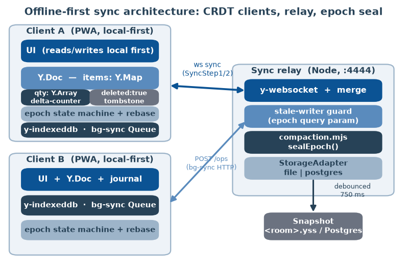
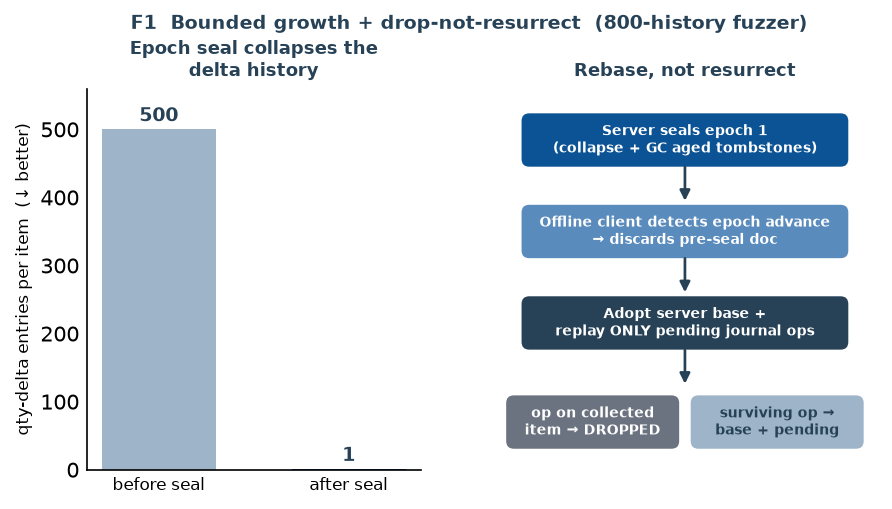
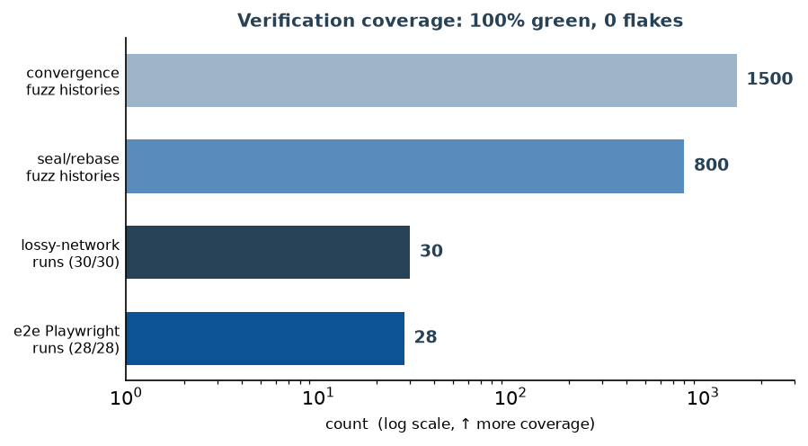
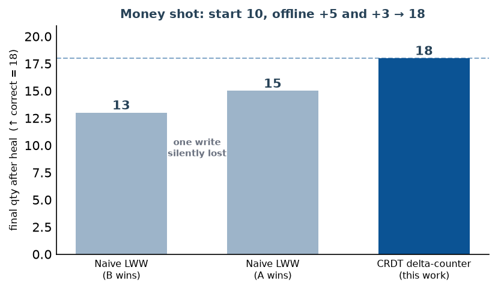

Field workers, warehouse staff, and users on flaky mobile networks lose connectivity constantly. An application built for them must keep functioning with the network completely off and, critically, reconcile changes when the network returns — without losing data when two people edited the same thing. This is a distributed-systems problem wearing a web-app costume, and it is the hard part that most "offline" portfolios skip.
The common baseline — "fake offline" — is a service worker that precaches the app shell so the page loads without a network. That is a legitimate but shallow capability: it cannot reconcile concurrent writes, because it is not sync at all. The naive default for sync — last-write-wins (LWW) — is worse than doing nothing, because it fails silently: on reconnect the last write to arrive overwrites the first, and the first client's edit simply vanishes with no error and no trace [SPEC §0, §10].
This paper describes a build whose credible headline is not "first offline PWA." It is a measured, reproducible correctness result on a named axis: after arbitrary offline edit interleavings, all replicas converge, no writes are lost, and no records are duplicated — and the claim is backed by an automated test suite anyone can clone and run. The chosen domain is offline stock-count/inventory, which has the one data shape that breaks naive CRDT modelling — a counter — solved here with a delta-counter so concurrent offline adjustments accumulate instead of clobbering one another.
Beyond the base correctness result, the paper's technical centrepiece is what happens over the lifetime of a long-lived collaborative document. A CRDT that never forgets history grows without bound: the delta-counter appends one entry per adjustment forever, and deletes are retained as tombstones for the life of the room. We bound both with server-side epoch compaction, and we solve the subtle correctness hazard it creates — a long-offline client resurrecting collected state on merge — with a client-side rebase protocol.
This work makes the following concrete, reproducible contributions:
1. A provably correct offline-first inventory CRDT. A Yjs-based design where different-field edits merge for free, same-field edits converge by deterministic client ordering, deletes are tombstones (delete wins visibility, edits preserved beneath), and — the crux — quantity is a delta-counter so two concurrent offline adjustments sum. The anti-LWW money shot is a counter that starts at 10 and converges to 18 after a concurrent offline +5 and +3.
2. Epoch compaction that bounds unbounded CRDT growth. A pure, side-effect-free server module seals a new epoch at a safe checkpoint (an idle room), collapsing each item's entire delta history to a single base entry and garbage-collecting tombstones past a configurable horizon. A deterministic test collapses a 500-entry delta array to 1.
3. A rebase-not-resurrect protocol. A client that was offline across a seal cannot be allowed to merge naively — it would resurrect collected items and collide containers. Instead it adopts the server's epoch base and replays only its genuinely-pending journal ops, dropping any op that targets a collected item.
4. Three-way verification. 28/28 Playwright end-to-end runs across the full scenario catalogue, a 1500-history Jepsen-style convergence fuzzer, and an 800-history seal/rebase fuzzer — plus an adversarial lossy-network suite green at 30/30 under repetition.
5. An honest empirical account. We report the property the fuzzer surfaced (a concurrent-create collision the app avoids by design), the deliverables that are gated (remote CI, real closed-tab sync, real-database round-trips), and the size-reduction figures that remain targets rather than measured results.
The techniques composed here are mature; the contribution is correctly composing and proving them, not inventing them. CRDTs are a solved research area: Shapiro et al.'s comprehensive study of convergent and commutative replicated data types [1] and the foundational conflict-free replicated data type paper [2] establish the convergence theory this build relies on, and the delta-state formulation of Almeida, Shoker, and Baquero [3] is the model for collapsing a delta history into a compacted base without losing convergence. The PN-counter used for quantity is a classic CRDT counter construction from that literature.
Production-grade CRDT libraries exist: Yjs [5] (with y-indexeddb for local persistence, y-websocket for transport, and y-protocols/sync for the state-vector handshake) and Automerge [6]. Operational Transform [7] powers Google Docs and is the more complex alternative to CRDTs. The philosophy is articulated in the Local-First Software manifesto [4]. Turnkey local-first sync stacks — ElectricSQL, PowerSync, RxDB, TinyBase, and Dexie [17] — already package this as a service; we deliberately hand-roll the sync layer to make the correctness argument explicit and testable rather than delegated.
The compaction/GC design draws on Yjs's own state-vector and update-encoding primitives [5] and, for the "a stale client must catch up from a checkpoint rather than replay its whole history" pattern, on Dynamo-style anti-entropy reconciliation [8]. The adversarial testing methodology is inspired by Jepsen [9] — network partitions and socket kills as first-class test inputs. Real background retry uses the Web Background Synchronization draft [11] and Workbox's background-sync queue [10]; the PWA platform surface is the MDN Service Worker, Background Sync, IndexedDB, and Web App Manifest specs [12]. Verification uses Playwright [13] for multi-context browser tests and fast-check [16] for property fuzzing.
Named baselines to beat. Per the project's evaluation spec, the comparison is against two explicit baselines [05-evaluation-metrics.md §3]: (i) "fake offline" (cache-the-shell), which cannot reconcile concurrent writes; and (ii) naive LWW, which loses data silently. The win is beating both — real bidirectional sync where both concurrent edits survive a correct automatic merge — proven reproducibly.
Figure 1 shows the system. Each client is a local-first PWA (React + Vite) whose UI reads and writes a single Y.Doc first, so the app is fully usable with the network off. The document is a top-level items Y.Map; each item is a Y.Map with scalar fields (sku, name, location), a notes Y.Text, a deleted tombstone flag, and — the interesting field — a qty Y.Array of signed deltas. The client persists to IndexedDB via y-indexeddb and transports over a hand-rolled y-websocket relay (Node, port 4444); the app runs on Vite (port 5173). No GPU is used anywhere in the project.

The conflict model is a stated, defended choice [README, docs/01-overview §3]. We use a Yjs CRDT because it is the easiest path to a provably correct automatic merge. The design decisions follow the data shapes: different-field edits merge for free (per-key Y.Map); same-field scalar edits converge by Yjs's deterministic client ordering; deletes are tombstones so an edit concurrent with a delete cannot resurrect the item, but the edit is preserved beneath the tombstone; and quantity — the shape that breaks naive CRDTs — is a delta-counter (a PN-counter built as a Y.Array of {d, op, ts} entries). The effective quantity is the sum of all deltas, so two concurrent offline adjustments both survive. Item ids are minted as fresh ULIDs per create, which (as §6 explains) is not cosmetic but a correctness requirement.
The delta-counter and the tombstone set both grow monotonically — one delta entry per adjustment, tombstones for the life of the room. Left alone, a busy count session accretes thousands of deltas whose sum is a single number, and the snapshot grows without bound. Epoch compaction (server/src/compaction.mjs) bounds both. sealEpoch returns a fresh Y.Doc — it never mutates the source — in which each surviving item's qty is collapsed to one base delta equal to its sum, tombstones older than a horizon are dropped, and meta.epoch is bumped. Figure 2 (left) shows the deterministic case from the fuzzer: a 500-entry delta array collapses to 1 base entry preserving the value 500, and one aged tombstone is garbage-collected while a recent one is kept.

Compaction is only half the feature. If the server rebuilds the room with fresh item containers and a long-offline client later reconnects and does a normal Yjs merge, two failures occur [compaction.mjs header]. First, resurrection: the client still holds the pre-compaction live struct for an item the server garbage-collected, and merging re-introduces a delete that was already agreed and collected. Second, container collision: the compacted item is a new Y.Map under the same id, so the client's old Y.Map is a concurrent register write and Yjs keeps exactly one container, silently discarding the other's deltas.
The client-side rebase (app/src/crdt/rebase.ts) solves both. On detecting that the server advanced to a newer epoch, the client discards its pre-seal doc, adopts the server's epoch base (rather than merging into it), and replays only its genuinely-pending journal ops on top — dropping any op that targets an item the epoch collected (Figure 2, right). The wire protocol carries the client's adopted epoch as a WebSocket query parameter, and the relay's stale-writer guard serves state to, but discards writes from, pre-epoch connections. The natural safe checkpoint is an idle room: every client that was connected has, by definition, synced, so the only replica that can be behind is one reconnecting later — precisely the case the rebase protocol handles.
The relay writes one debounced snapshot per room (default 750 ms) through a pluggable StorageAdapter (server/src/storage.mjs): SYNC_STORAGE=file (the default, byte-identical to the atomic temp-file+rename v1.0 behaviour) or SYNC_STORAGE=postgres (an upsert into a yss_snapshots table via the pg driver). The same encodeStateAsUpdate blob is written either way. Offline mutations also retry over an HTTP path via a hand-written Workbox service worker that owns a workbox-background-sync queue on a NetworkOnly route to POST /rooms/:room/ops; the server applies the batch idempotently, reusing the same drop-not-resurrect semantics (opId dedupe; an op on a collected item is dropped). An adversarial lossy-network suite injects real faults through a test-only, off-by-default POST /rooms/:room/kill-conns endpoint.
Hardware and environment. The project was built and evaluated on a single machine with an RTX 5080 (16 GB), but the workload is pure web/distributed-systems: no GPU is used. Requirements are Node 18+ and a Chromium that Playwright installs; ports 5173 (app) and 4444 (relay) [RUNBOOK §0].
"Datasets" = test scenarios. The artifact's credibility is a reproducible correctness test, so the "data" is a scenario catalogue [SPEC §4]: same-field concurrent edit, different-field concurrent edit, offline create ×N, delete-vs-edit race, a long-offline queue of 50 ops, three-way (A, B, server) merge, multi-tab on one device, the delta-counter adjustment, and the epoch-rebase full-stack scenario (S8), plus the adversarial NET1–NET3 and the F4 background-sync scenario.
Metrics. Correctness, not throughput, is the headline [docs/05 §1]. Every metric is a pass/fail assertion first: convergence (all replicas byte/field-identical after sync settles), no lost writes (concurrent different-field edits both persist), no duplicates (offline creates replay idempotently to exactly N records), and defined conflict behavior (same-field conflicts resolve per the documented rule, never a silent overwrite). The one quantitative family is F1's size-bounding — measuring that growth is bounded, not speed.
Protocol and tooling. End-to-end tests use Playwright multi-context automation [13]: each test spins up isolated A/B (and C) browser contexts and a unique sync room, under two Chromium projects (chromium-client-a, chromium-client-b). Property fuzzing uses fast-check [16] over pure Node + Yjs (no browser). The convergence fuzzer generates random operation histories across three replicas with random partition/heal points; the epoch fuzzer generates random seal/rebase histories including adversarial pending ops on items the seal is about to collect. Every claimed number below is either a measured result from the repo or an explicitly-labelled target.
Figure 3 summarizes the verification coverage; all of it is green.

The full Playwright suite is 28/28 green — 11 spec files, 14 tests, run under two Chromium projects [README §Status]. Each test asserts convergence across all replicas (both clients and the server) plus its specific guarantee. The v1.0 core of this suite (before the Phase-2 additions) was 16/16 green — 8 specs × 2 projects [docs/phase-2/05 §2]. Table 1 reproduces the money table; every row is an automated assertion.
| Scenario | Expected outcome | Guarantee |
|---|---|---|
| Same-field concurrent edit | Converges to defined result | Defined conflict behavior |
| Different-field concurrent edit | Both survive | No lost writes |
| Offline create ×N → reconnect | Exactly N records | Idempotency (ULID) |
| Delete-vs-edit race | Tombstone; edit preserved | Deterministic delete/edit |
| Long-offline queue (50 ops) | Replays correctly, in order | Ordered replay |
| Three-way (A, B, server) | All converge identically | Convergence |
| Multi-tab, one device | Tabs stay consistent | Cross-tab concurrency |
The anti-LWW result is the counter (Figure 4). Starting from qty = 10, client A goes offline and applies +5 while client B goes offline and applies +3; after reconnect and heal, every replica shows 18 (10 + 5 + 3) — both adjustments survived [e2e/specs/qty-concurrent-adjust.spec.ts]. A naive LWW register would have shown 15 (A wins) or 13 (B wins), silently losing one write. This is the concrete, reproducible instance of the named win over both baselines.

The convergence fuzzer runs 1500 random histories [fuzz/crdt-convergence.fuzz.mjs, numRuns=1500], each generating random adjust/update/delete operations across three replicas interleaved with random partition/heal points, then a final all-to-all heal. It asserts three invariants on every history: convergence (all replicas byte-identical), qty = sum of applied deltas (the anti-LWW property), and tombstone (a delete is never lost and an edit never resurrects a deleted item). All 1500 pass.
The epoch fuzzer runs 800 random seal/rebase histories [fuzz/epoch-compaction.fuzz.mjs, numRuns=800], driving the real server seal (compaction.mjs) against a rebase model faithful to rebase.ts. Five invariants hold on every history: bounded (each sealed item's qty array has ≤ 1 entry and no collectible tombstone remains); value-preserving (the collapsed base qty equals the pre-seal effective qty); no-resurrect (items collected by the seal never reappear after rebase, and the rebase reports exactly the number of dropped ops); no-double-count (a surviving item's final qty equals base + the client's pending deltas only — already-synced deltas folded into the base are not replayed); and convergence (server and client byte-identical and both carry the new epoch after a final heal). A deterministic companion case collapses a 500-entry delta array to a single base entry preserving value 500, GCs exactly one aged tombstone, and keeps a recent one. The full-stack S8 scenario proves the same end-to-end in a browser: two live clients, a real POST /rooms/:room/compact seal while a client is offline, reconnect, automatic rebase (clear + reload + pending replay), and convergence with the collected item gone and the pending edit preserved.
The lossy-network suite (NET1–NET3) re-proves the identical all-replica convergence guarantee while the network itself misbehaves: NET1 uses real browser-level offline (context.setOffline) with a server-side assertion that no write leaked through the partition; NET2 abortively terminates every WebSocket of the room six times during 24 rapid concurrent edits per client, and the reconnect + state-vector handshake must recover exactly the missing updates; NET3 adds CDP-emulated 500 ms latency with a mid-burst kill. Result: 6/6 green, 0 flakes across --repeat-each=5 (30/30) [README, docs/phase-2/README].
Per the standards of an empirical systems paper, the corrected findings are first-class results, not blemishes.
A real correctness hazard the fuzzer surfaced. The convergence fuzzer surfaced a genuine model property [fuzz/crdt-convergence.fuzz.mjs header]: an item is a Y.Map stored under its id in a top-level items Y.Map. If two replicas concurrently create the same id, that top-level key receives two concurrent register-writes; Yjs keeps exactly one Y.Map and discards the other — including any qty deltas pushed into the losing container before the merge. That would violate the qty = sum-of-deltas invariant and silently lose writes — the very failure the whole design exists to prevent. The app avoids it entirely by minting a fresh ULID per create, so two replicas never generate the same id; the fuzzer therefore creates each id once and then exercises the real concurrency surface. This is exactly the kind of subtle CRDT container-collision bug that only property testing exposes, and it is the same hazard the epoch-container-collision problem (§3.3) is a second instance of.
CI is written but has not run remotely. A GitHub Actions workflow (.github/workflows/ci.yml) runs npm ci → Playwright chromium → test:fuzz → test:e2e with the report uploaded on failure. It has been validated locally (YAML parse plus the suites it invokes are green) but has not yet run on a remote runner pending a first push [README §Phase 2]. Until it does, "green in CI" is a claim about local runs, not a hosted artifact.
The closed-tab background-sync proof drives the same code path, not a real sync event. A real closed-tab background sync event is not deterministically scriptable in Playwright/Chromium. The test therefore drives the same code path the browser's sync event fires — Queue.replayRequests() — via a message to the service worker; the queued request does live in the service worker's own IndexedDB independent of the page, and the SW also wires onSync to the real event for production. This proves the HTTP replay path and queue isolation, but not, in an automated test, the browser actually firing sync after the tab closes.
Postgres: real SQL is integration-tested in-process; the TCP driver is only unit-tested. The PostgresAdapter's real SQL — CREATE TABLE, the INSERT … ON CONFLICT DO UPDATE upsert, SELECT load, listRooms, and the make_interval prune — is integration-tested against PGlite [15] (full Postgres compiled to WASM, in-process), a genuine SQL round-trip with the bytea codec verified over all 256 byte values. But the pg driver's real TCP Pool wiring is still only unit-tested against a fake query client; a round-trip against an external Postgres is gated behind an opt-in SYNC_PG_TEST_URL [RUNBOOK §4d].
The size-reduction magnitudes are targets, not measured results. The evaluation spec states a target of "≥ 99% fewer deltas" and "≥ 90% smaller snapshot" for a room with L = 100 live items and A = 10 000 adjustments [docs/phase-2/05 §3–4], but these magnitudes are explicitly labelled illustrative targets; the fixed contract is the shape of the win — snapshot size becomes a function of live item count, not of historical adjustment count — which the 500 → 1 collapse and the "bounded" fuzz invariant do demonstrate. We do not present the 90%/99% figures as achieved measurements.
Scoping deviations, stated plainly. The lossy-network socket kill is a server-side abortive terminate() (a real TCP drop) rather than a Playwright routeWebSocket interception, and the NET specs run under the existing two Chromium projects rather than a dedicated adversarial project — because Chromium's network emulation does not reliably sever or throttle an already-established WebSocket, so a blanket "adversarial re-run of every spec" would have quietly exercised the clean path [docs/phase-2/README]. Finally, simultaneous multi-tab rebase has a narrow re-persistence window, documented in store.ts.
What is gated. This is a solid, reproducible engineering artifact, but several items must be completed before it would clear peer review as an empirical systems paper, and we state that plainly. (i) Remote CI: the workflow must actually run on hosted runners so "green" is an externally-verifiable fact, not a local claim. (ii) Measured size reduction: the L = 100 / A = 10 000 snapshot-byte and delta-count reductions must be measured and reported with the actual numbers, replacing the current targets. (iii) Real closed-tab sync: a demonstration that the browser fires sync and delivers after a genuinely closed tab, beyond driving the same code path. (iv) Real-database round-trips: the pg TCP driver against an external Postgres, and the multi-instance/two-writer convergence boundary, remain smoke-level or unit-level. (v) Longitudinal / field data: there is no human evaluation and no real low-connectivity field deployment; all "data" here is synthetic scenarios and property-generated histories. Peer-reviewed acceptance depends on completing these; the present contribution is a correctness result and a compaction/rebase design proven by property fuzzing, not a measured production study.
Ethical considerations. The system stores inventory records locally in IndexedDB and on a relay; in a real deployment this raises ordinary data-retention and access-control questions (offline devices holding un-synced data, tombstones retaining deleted records until GC). The design is domain-neutral and carries no ML model, no user profiling, and no automated decision-making, so the surface for misuse is small; the main honest caveat is that a lost or stolen offline device retains its local store until cleared. No personal data was used in evaluation.
We built an offline-first inventory PWA whose headline is a measured, reproducible correctness result: after any interleaving of offline edits and reconnects, all replicas converge with zero lost writes and zero duplicates, demonstrated by a delta-counter that turns a concurrent offline +5 and +3 into a converged 18 where naive LWW loses a write. We then bounded the CRDT's unbounded growth with epoch compaction (500 deltas → 1 base entry) and solved the resulting resurrection hazard with a rebase-not-resurrect protocol, verifying the whole with 28/28 end-to-end runs, 1500 convergence-fuzz histories, and 800 seal/rebase-fuzz histories, all green.
Future work follows directly from §7: run the CI remotely and publish the badge; measure and report the actual snapshot-byte reduction under the L/A workload; add a genuine closed-tab sync demonstration; exercise the pg TCP driver and the two-writer boundary against a real Postgres; and pursue a small field study in a low-connectivity setting to turn synthetic scenarios into observed workloads. The distributed-systems core — a compaction/GC scheme that provably preserves convergence via client rebase — is the piece most worth generalizing beyond inventory.
Stack and versions. React + Vite PWA; Yjs CRDT with y-indexeddb and a hand-rolled y-websocket relay; Workbox service worker (injectManifest) with workbox-background-sync; Node 18+ backend; StorageAdapter over file (default) or Postgres via the pg driver; Playwright (two Chromium projects) and fast-check for testing. No GPU; ports 5173 (app) and 4444 (relay).
Commands [RUNBOOK]. Install: npm install then npx playwright install chromium. Run both servers: npm run dev. End-to-end suite (starts its own servers): npm run test:e2e → 28/28. Fuzzers: npm run test:fuzz → 1500 convergence + 800 seal/rebase histories. Lossy-network flake budget: npx playwright test lossy-network --repeat-each=5 → 30/30. On-demand seal: POST /rooms/<room>/compact; room epoch is visible in GET /rooms/<room>/snapshot. Postgres-backed snapshots: SYNC_STORAGE=postgres SYNC_PG_URL=… npm run dev:server; adapter tests: npm run test:storage (includes the PGlite in-process integration pass).
Key parameters. Snapshot debounce SYNC_PERSIST_MS = 750 ms; tombstone horizon SYNC_COMPACT_TOMBSTONE_MS = 7 days; idle auto-seal pressure SYNC_COMPACT_MIN_PRESSURE = 64 (auto-compaction opt-in via SYNC_AUTO_COMPACT=1); snapshot prune age SNAPSHOT_MAX_AGE_DAYS = 30. Fuzz budgets: 1500 convergence histories over 3 replicas; 800 seal/rebase histories over up to 4 items each.